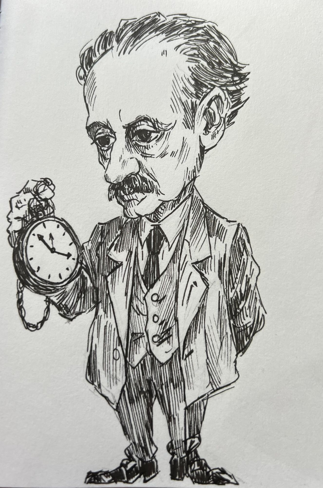
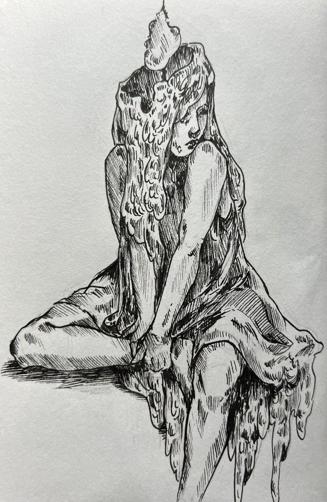
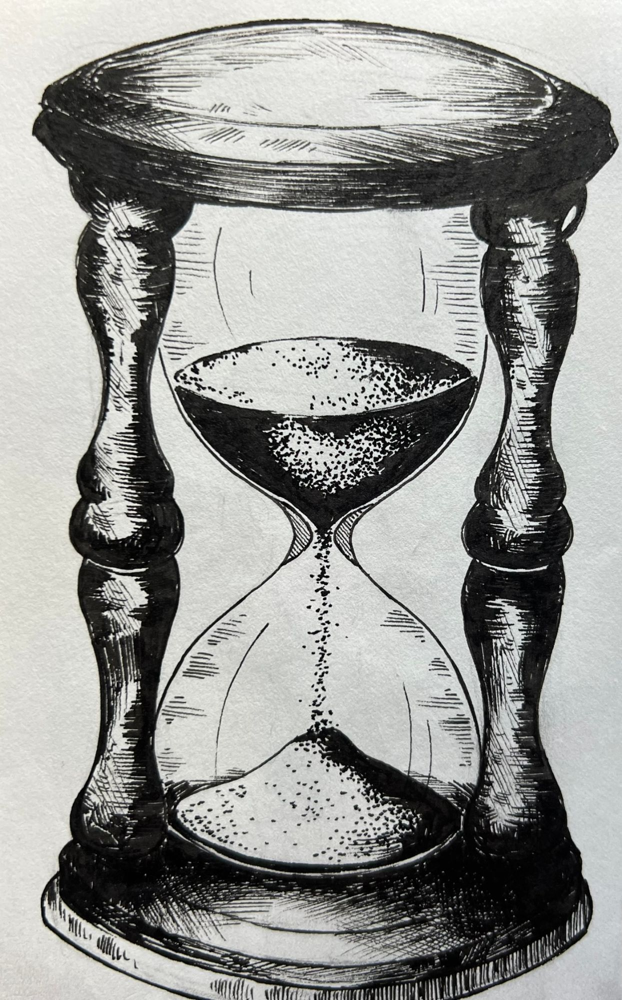

Kým máme čas
O pominuteľnosti, konečnosti a živote, ktorý stále odkladáme.

Začnem čítať až keď budem mať trošku viac času... Možno začnem až vtedy, keď sa v práci upokojí situácia, je toho teraz veľa... Budem sa už konečne venovať aj sebe, ale až keď dokončím školu... Raz sa ozvem aj človeku, na ktorého si už niekoľko mesiacov spomínam.
Tieto vety vám určite nie sú cudzie však? Niektoré sú dokonca aj celkom rozumné. Život má predsa svoje nároky a všetko sa naraz urobiť nedá. Medzi povinnosťami sa však postupne objavuje očakávanie, že niekde pred nami leží obdobie, keď sa všetko konečne usporiada. Budeme mať dosť peňazí, menej starostí a pokoj v hlave. Vtedy sa začne život, ktorý sme si predstavovali, no dovtedy... dovtedy ešte musím niečo dokončiť.
Cintorín v novembri
Je pravdou, že november nás z tohto čakania trošku vyruší. Na cintorínoch čítame mená ľudí, ktorých život už dostal posledný dátum. Niektorých sme možno poznali. Vieme, ako sa smiali, čo ich hnevalo a dokonca aj „maličkosti“ ako kam si zvykli sadnúť. Predstavte si, že aj oni mali pravdepodobne plány na ďalší týždeň.
Pri jednom z hrobov si možno spomenieme na telefonát, ktorý sme mali vykonať, alebo na návštevu, ktorú sme sľúbili „cez leto“. Teraz už niet komu. Na chvíľu sa nám tak priblíži skutočnosť, ktorú inak prijímame s prekvapujúcim pokojom... raz bude uzavretý aj náš vlastný život.
Čo s týmto vedomím urobíme, keď sa vrátime domov?
Žiť, ako sa „žije“
Nemecký filozof Martin Heidegger sa takýmito otázkami zaoberal v diele Bytie a čas. Človeka, ktorého nazýva Dasein (po slovensky aj tu-bytie), chápe ako bytosť, ktorej ide o vlastnú existenciu. Záleží jej na tom, čím sa stáva a aké možnosti má pred sebou. Na otázku, ako žijeme, pritom neodpovedáme len premýšľaním, ale aj tým, čo robíme, čomu sa vyhýbame a čo nechávame na neskôr.
„Otázku existencie možno vždy vyriešiť len samotným existovaním."
— Martin Heidegger, Bytie a čas, § 4
Väčšinu času navyše žijeme tak, ako sa „žije“. O smrti vieme, ale držíme ju na dištanc. Sme si vedomí toho, že sa zomiera, veď aj to sa stáva ľuďom. Heidegger však premýšľa, že smrť je naša vlastná možnosť, ktorú nemôže nikto prevziať za nás. Keď ju prijmeme, môžeme sa k životu vzťahovať autentickejšie. Svoje možnosti už nepreberáme len zo zvyku a od iných, ale uznáme ich za vlastné.

Skúsme to preložiť do bežného života. Koľko rozhodnutí robíme preto, že sme sa pre ne sami rozhodli? A koľko preto, že sme jednoducho pokračovali, ako sa pokračuje?
Vybrali sme si nejaký smer a prijali záväzky. Zvykli sme si na určitý spôsob fungovania a roky sa okolo neho usporiadali. Tento spôsob nám môže vyhovovať aj dnes, no zároveň je možné, že dôvody, pre ktoré sme ho kedysi zvolili, dávno prestali platiť a my to nevieme postrehnúť. Na otázku, prečo takto žijeme, vtedy odpovieme len, že to tak robíme predsa stále.
Veď počkajú
Život môžeme odkladať aj celkom nenápadne. Niekedy nečakáme na veľkú cestu ani na nový začiatok. Stačia aj „maličkosti“ ako rozhovor, pri ktorom by sme museli povedať pravdu. Návštevu človeka, pri ktorom nám je dobre. Hodinu venovanú niečomu, čo nás zaujíma, hoci nám to neprinesie nič do životopisu. Postupne si zvykneme považovať takéto veci za menej naliehavé.
Veď počkajú... ale aj čakanie má svoje dôsledky. Vzťahy sa menia, telo starne, okolnosti sa preskupujú a čas sa nezastaví. Možnosť, ktorú máme dnes, nemusí o päť rokov vyzerať rovnako. Niekedy zmizne bez toho, aby sme si všimli okamih, keď sme o ňu prišli.
Znamená odkladanie vždy únik?
Heideggerovo prijatie konečnosti môže niekomu pripadať tak, že musíme ustavične myslieť na to, kedy a ako zomrieme. Alebo ako zoznam vecí, ktoré treba stihnúť, no nie je tomu tak. Ide o spôsob, akým sa vzťahujeme k vlastnému životu a jeho možnostiam, a tie nikdy nevznikajú z ničoho. Autentická existencia je vždy zasadená do okolností a minulosti, z ktorých vychádzame.
To je dôležité aj pre našu úvahu.
Človek, ktorý po náročnom pracovnom dni nemá silu na ďalšie plány, nemusí svoj život premárňovať. Dobre vieme, že starostlivosť o dieťa, chorého rodiča či vlastné zdravie môže zabrať takmer všetok dostupný čas. Možnosti ľudí sa líšia a bolo by necitlivé hovoriť každému, že stačí chcieť a konečne začne žiť.
Otázku odkladaného života si preto musíme klásť vo vlastných podmienkach. Kedy naozaj potrebujem počkať? Kde potrebujem pomoc? A kde sa už celé roky skrývam za predstavu vhodnejšej chvíle?
Keď sa konečnosť zmení na tlak
Aj vedomie konečnosti sa totiž môže kedykoľvek zmeniť na ďalšiu povinnosť. Musím byť produktívny, musím tvoriť, musím cestovať... Musím! Musím! Musím! Musím mať život, pri ktorom nebudem nič ľutovať a ani sa nenazdáme a z obyčajného popoludnia sa potom stáva skúška, či sme ho prežili dostatočne hodnotne.

Takú požiadavku nemožno splniť. Vždy zostanú knihy, ktoré neprečítame, miesta, ktoré nenavštívime, a cesty, ktorými nepôjdeme. Každý záväzok zaberá priestor, ktorý mohol patriť niečomu inému. Konečnosť sa prejavuje aj v tejto obyčajnej skúsenosti výberu.
Čo sme ochotní nechať tak
Preto si myslím, že potrebujeme premýšľať aj o tom, čo sme ochotní nechať tak. Ktoré ambície sú ešte tie naše? Ktoré už len udržiavame zo zvyku alebo zo strachu, ako by vyzeralo ich opustenie? Čomu chceme venovať pozornosť, aj keby sa o tom nikto nikdy nedozvedel?
Tie odpovede nemusia byť akéhosi vznešeného charakteru a úprimne, nemusia ani viesť k nejakému dramatickému obratu. Človek môže zostať v rovnakej práci, v rovnakom meste a pri rovnakých ľuďoch. Zmeniť sa môže jeho vzťah k tomu, čo robí. Po rokoch si môže uvedomiť, prečo chce zostať, alebo konečne pripustiť, že zostať nechce.
A samozrejme... môže si dovoliť aj odpočívať. Sadnúť si ku káve bez pocitu, že za ten čas mal niečo dosiahnuť. Počúvať človeka bez toho, aby v hlave pripravoval ďalšiu úlohu. Vari chce niekto skutočne žiť vo svete, kde oddych znamená lenivosť? Môžeme si všimnúť, že aj toto je čas nášho života. Ten čas, kedy spomalíme a s úsmevom vychutnáme.
„Raz sa aj zomiera, ale zatiaľ ešte nie."
— Martin Heidegger, Bytie a čas, § 51
Má zmysel budovať, keď všetko pominie?
Napokon zostáva otázka, či pominuteľnosť neuberá veciam hodnotu. Veď načo budovať, keď sa všetko raz skončí?
Rímsky filozof Seneca v spise O krátkosti života písal, že život nie je krátky, len z neho väčšinu premárnime. Je to výzva, aby sme sa ponáhľali. Heidegger ide na to trošku z iného uhla a premýšľa, že konečnosť nie je len dôvod na zhon, ale podmienka, vďaka ktorej má niečo vôbec váhu. Dobrý rozhovor je pre nás dôležitý aj po tom, čo sa rozlúčime. Hudbu počúvame s vedomím, že skladba dohrá a niektoré chvíle si pamätáme práve preto, že sa už nikdy nezopakovali.
S vlastným životom sa zmierujeme o niečo ťažšie. Radi by sme mali istotu, že dostaneme príležitosť napraviť, čo zanedbáme, a uskutočniť, čo dnes odložíme. Takú istotu však nemáme. To by bolo príliš jednoduché...
Vrátil som sa z cintorína
Vrátil som sa z cintorína. Čakal na mňa otvorený, nedopisaný článok a aj ten riad by som mohol už konečne umyť.
Od toho večera keď sa vrátite aj vy, netreba očakávať veľké osvietenie. Možno si však spomeniete na niečo, čo už dlhšie odsúvate. Možno na tú plánovanú návštevu? Na to rozhodnutie, ktoré poletuje v hlave? Na rozhovor, ku ktorému ste sa ešte neodhodlali?
A tentoraz si pri vete „raz, keď budem mať čas“ položíte otázku, ktorú ste si doteraz nekládli.
Na čo presne ešte čakám?
— Marko Marciano, FilozofiaDenne
Použitá literatúra
Martin Heidegger: Bytie a čas, § 4 (otázka existencie), § 27 (Ono / „Ľudia“), §§ 47–53 (smrť a bytie k smrti).
Seneca: O krátkosti života, 1, 3.